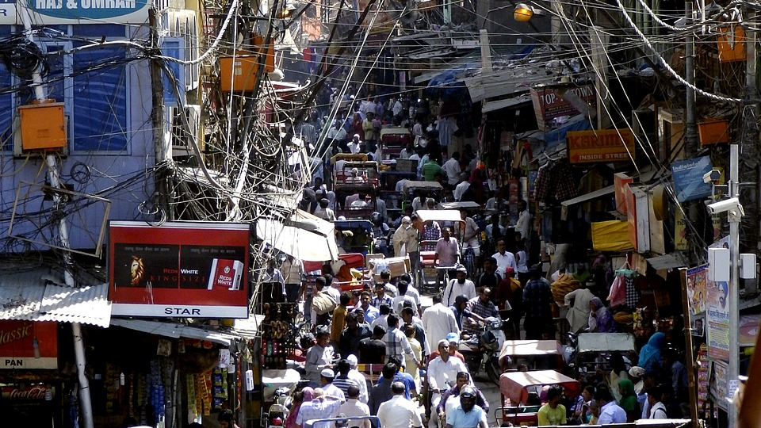
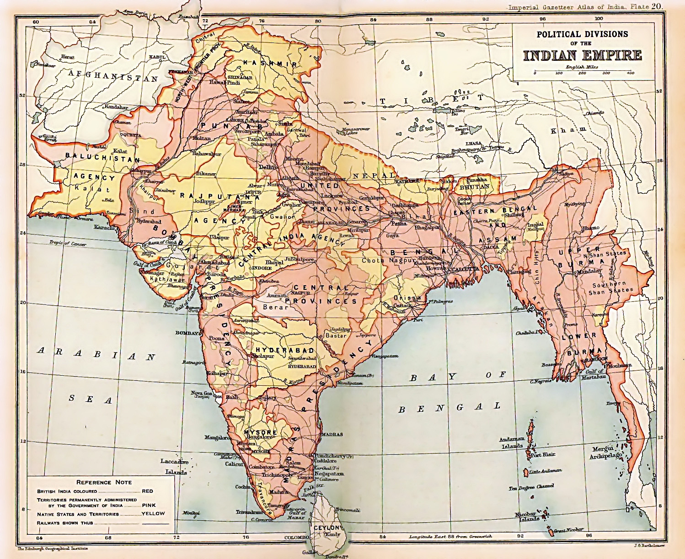
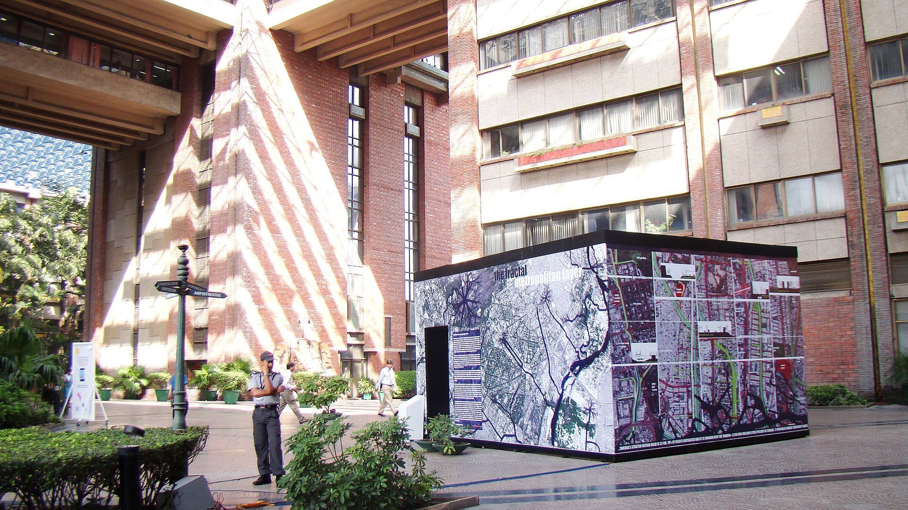
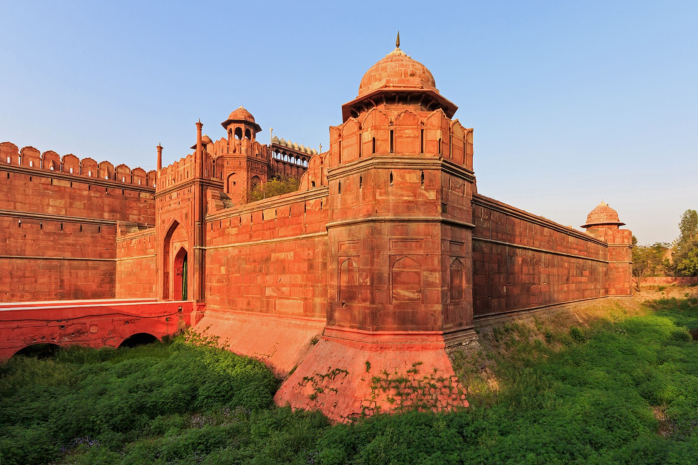
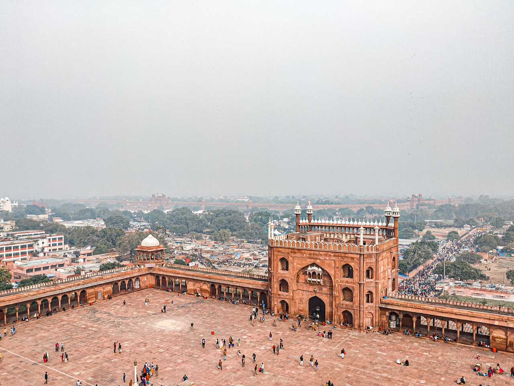
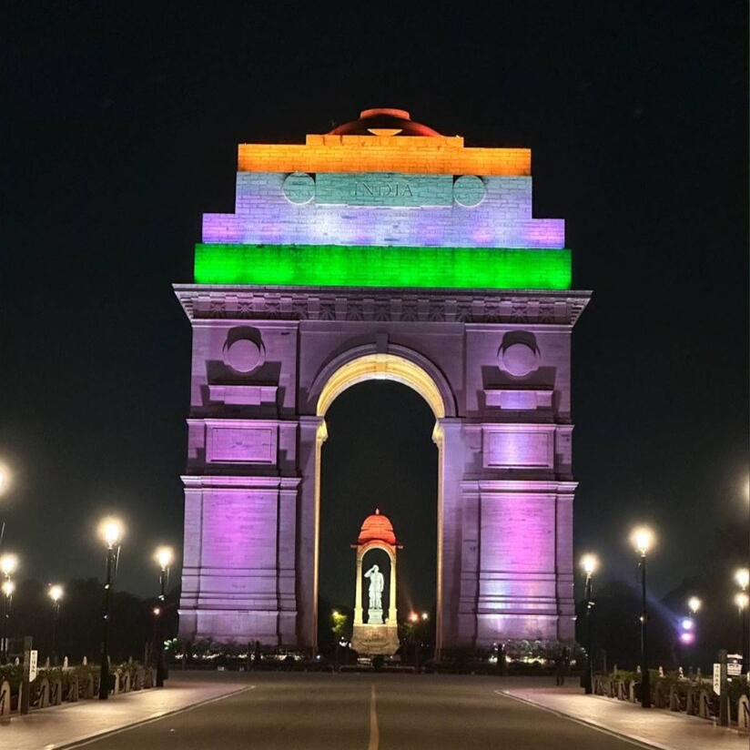

Delhi - wielka stolica Indii
Delhi, stolica Indii, to jedno z najstarszych i najważniejszych miast w kraju, o bogatej historii, kulturze i znaczeniu politycznym. Jako miejsce, w którym przez wieki rozwinęły się różne cywilizacje, Delhi stanowi skarbnice architektury, sztuki, religii oraz tradycji. Historia tego miasta sięga ponad 3 tysięcy lat, a dzisiejsze Delhi to dynamiczne, tętniące życiem miasto, które łączy tradycję z nowoczesnością.
Historia
Historia Delhi jest niezwykle złożona, a miasto było świadkiem wielu kluczowych wydarzeń w historii Indii. Pierwsze osady na terenie dzisiejszego Delhi powstały około 3000 lat temu. W ciągu wieków miasto było wielokrotnie niszczone, odbudowywane i zmieniało swoje oblicze, a jego historia jest ściśle związana z rozwojem Indii jako państwa.
Starożytność i średniowiecze: W starożytności, obszar dzisiejszego Delhi był znany jako Indraprastha, które według mitologii hinduskiej było stolicą Kuru, dynastii bohaterów Mahabharaty. W rzeczywistości pierwsze archeologiczne ślady osadnictwa w Delhi pochodzą z około 1000 roku p.n.e. W średniowieczu Delhi stało się centrum różnych dynastii, w tym Dynastii Tomara i później Dynastii Mogołów.
Panowanie Mogołów: Największy rozwój Delhi jako stolicy miał miejsce w okresie panowania Mogołów, którzy rządzili Indiami od XVI do XVIII wieku. Pod ich rządami miasto stało się jednym z najważniejszych ośrodków w Azji, z monumentalnymi budowlami takimi jak Czerwony Fort czy Jama Masjid. To w Delhi miało miejsce wiele wydarzeń politycznych, a miasto stało się także centrum sztuki i kultury.
 Brytyjskie panowanie: Po upadku Mogołów w XVIII wieku, Delhi znalazło się pod panowaniem Brytyjczyków. W 1857 roku miało miejsce Wielkie Powstanie, znane także jako Powstanie Sipajów, które miało duży wpływ na historię Delhi. Po stłumieniu powstania Brytyjczycy przenieśli stolicę Indii z Kalkuty do Delhi w 1911 roku, co miało wpływ na dalszy rozwój miasta. W 1947 roku, po uzyskaniu przez Indie niepodległości, Delhi stało się stolicą nowego, niepodległego państwa indyjskiego.
Kultura
Delhi jest miastem, które łączy w sobie różnorodne kultury, tradycje i religie. Kultura miasta jest wynikiem wielowiekowego wpływu różnych dynastii, a także różnorodnych grup etnicznych i religijnych, które tworzą mozaikę tego miasta.
Religia: Delhi jest miastem, w którym spotykają się różne religie, w tym hinduizm, islam, sikhizm, chrześcijaństwo oraz buddyzm. Miasto ma liczne świątynie, meczety, kościoły i gurudwary, które stanowią ważną część życia religijnego jego mieszkańców.
 Sztuka i literatura: Delhi jest również centrum sztuki, muzyki, teatru i literatury. W mieście odbywają się liczne festiwale artystyczne, takie jak Delhi International Arts Festival czy India Habitat Centre Festival. Mieszkańcy Delhi są również znani ze swojej pasji do sztuki ulicznej i nowoczesnych form ekspresji artystycznej.
Kuchnia: Kuchnia Delhi jest niezwykle różnorodna, z wieloma tradycjami kulinarnymi wpływającymi na potrawy. W Delhi można spróbować zarówno tradycyjnych indyjskich potraw, jak i dań kuchni pakistańskiej, afgańskiej czy perskiej. Popularne potrawy to m.in. chole bhature, paratha, kebaby, chana masala i biryani.
Atrakcje
Delhi jest miastem pełnym zabytków, które przyciągają turystów z całego świata. Wiele z tych miejsc ma wielkie znaczenie historyczne i kulturowe. Oto niektóre z najważniejszych atrakcji turystycznych:
 Czerwony Fort to jedno z najważniejszych dzieł architektury Mogołów, zbudowane w XVII wieku przez cesarza Shah Jahana. Fort, wpisany na Listę Światowego Dziedzictwa UNESCO, jest znany z imponujących murów i wnętrz, w tym Pałacu Diwan-i-Khas i Diwan-i-Am. Czerwony Fort był przez wiele lat rezydencją cesarską, a dziś jest jednym z głównych symboli Delhi.
 Jama Masjid to jedna z największych i najważniejszych meczetów w Indiach, także zbudowana przez Shah Jahana w XVII wieku. Meczet jest znany z monumentalnej architektury, z ogromnymi kopułami i minaretami, oraz z pięknych dziedzińców. Jest to ważne miejsce modlitwy dla muzułmanów, a także popularna atrakcja turystyczna.
 India Gate to monumentalny łuk zwycięstwa, który został zbudowany na cześć żołnierzy indyjskich poległych podczas I wojny światowej. Jest to jedno z najbardziej rozpoznawalnych miejsc w Delhi, szczególnie w nocy, kiedy jest pięknie podświetlone. W pobliżu India Gate znajduje się także pomnik Nieznanego Żołnierza.
Przelot dronem nad Delhi